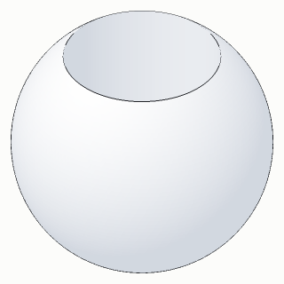
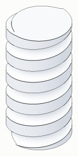
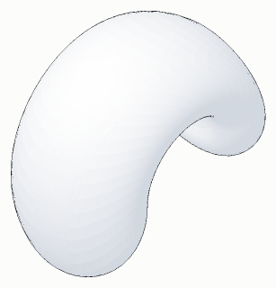
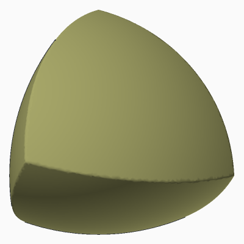
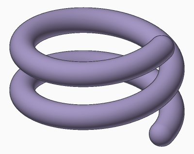

Mathy declarative code-cad for an exciting future
Math provides language for extremely compact descriptions of solids and phenomena.


A torus tumbled through space, where T is a torus and A and B are two skew lines it turns about:

Why not just use that? Furthermore: math doesn't get bogged down in all the traditions of CAD - feature trees, edit timelines, operations. CAD has this bad habit of recapitulating manufacturing processes. This is a violation of separation of concerns. A mathematical description can encode the requirements of manufacturing, but it shouldn't have to.
The reason why not, to answer the above question, is that an implicit description is only as useful as the solution you can wring from it. "The shape a hanging chain takes" picks out exactly one curve; Galileo thought it was a parabola, and it was another fifty years before anybody found out what it was. Likewise you can say
which is a worm wheel: what's left of a blank K after its worm T has turned through it, thirty turns of the worm to one of the wheel. Nothing is missing from that description, and brep-bench still lists it as unsettled, because no two kernels have agreed on its volume. If you want to fit it into an assembly, measure it, render it, or manufacture it, you need to actually evaluate it into three dimensional space. Traditionally this was a difficult process engaged in as a prerequisite of the design process. But what if solvers were really good? What if they could just solve basically any solvable problem, allowing the designer to specify the problem, and not the solution? This is a declarative language; as opposed to traditional imperative CAD processes (and code-CAD languages and libraries). This is part of a long tradition: Ivan Sutherland's Sketchpad had geometric constraints in 1963, and every parametric CAD program since has a constraint solver in it, kept to the 2D sketch. The difficult work of engineering a solver that isn't kept there is within reach. Solvent's solver today does sketches, linkages, solids, gears cut by their mates, and beams sized by how far they sag; magnetic fields and fluids are still ahead of it.
The declarative language in the case of Solvent is geometric, not algebraic. For example in many of the set descriptions of brep-bench cases the set description is an algebraic phrase embedding a lot of numbers that were themselves solved from an even deeper implicit geometric description. A Reuleaux tetrahedron is what four balls of radius 10 have in common, when each one's center is 10 from the others':
Somebody had to work out 5√3/3 and 10√(2/3). Solvent does that. You write what they were worked out from:
unit mm use std param s := 10mm a := point b := point hint((s, 0, 0)) c := point hint((s / 2, s, 0)) d := point hint((s / 2, s / 2, s)) a distance(s) b a distance(s) c a distance(s) d b distance(s) c b distance(s) d c distance(s) d body := solid({ p | p distance(<= s) a p distance(<= s) b p distance(<= s) c p distance(<= s) d })
$ solventc reuleaux.sv --where body.volume --png reuleaux.png reuleaux.sv: solved 12 params, 6 equations, structural rank 6; DOF 6 body.volume = 422.158

The numbers in hint(…) are where the solver starts looking, not facts. The volume
is the closed form's. The six freedoms the report counts are where the thing sits in space, which
nobody said. The rule of the house is that a cosine or a literal coordinate in a Solvent document is
a lint.
The result, as above, is a clean break from many of the traditions of CAD. Solvent statements are unordered; they are not a recipe for building the solid; they are a description of true facts about the solid, and the solver determines if the description is well defined and then finds the geometry. As a result there is no timeline or feature tree. The entire assembly is solved at once, with a caveat the next section gets to.
Code-cad is CAD adhering to the principles of code. What are those principles? In a word, gittable. A small change in what you mean should be a small change in the text, and somebody else should be able to read that change and know what you meant. The result of which generally is that you can edit a few lines of code without messing up the entire document. This is not true of STEP files, even though they are text; it's certainly not true of STL or Solidworks files, which are more like baked cakes than documents. This fundamental property underlies the scalability of software in general; it's what makes it possible for tens of thousands of people to collaborate in the Linux kernel. Tens of thousands of people collaborate on machines, sure (the space shuttle surely), but they don't all dig into the same document; they accomplish this via rigid abstraction boundaries and global standards. As a result, open source hardware is sort of stuck. Most open source hardware projects just have a folder full of STLs, and if you want to edit them, you have to reverse engineer the STLs into a new Solidworks document just to move a hole.
This shortcoming of CAD is well known; there are many code-cad projects (OpenSCAD, CadQuery, build123d), and this is one of them. Unordered statements help here too: two people adding facts to the same part are not both editing one sequence.
Code-cad supplies a few constraints not supplied by the above sections - namely, scalability and modularity. The aim of Solvent is to be useful for arbitrarily large assemblies, which means that you can't literally solve a million parameters to build a car. It accomplishes this via functional design principles; ie, each module is a function of its inputs. The same definition with the same arguments gives the same geometry, so it is worked out once and placed as many times as it is used: a car with four hundred of the same bolt solves the bolt once. Point being, some features of the language do divert from "mathy" and "declarative" in service to the requirement that Solvent is also "code-cad".
We are entering a world where everybody can build anything, and this is a tool to make that possible. Every person deserves the dignity of deciding what their life should look like, and right now most people are denied that dignity by having to use the outputs of a fairly tightly constrained design and manufacturing stack. We crush rocks down, melt the parts that melt, hammer them into blocks, machine them with mills and lathes and presses, assemble them into heat engines and the frames for those heat engines, pave strips of the earth to make it easier to roll those machines along them, build our houses so those machines fit inside of them, build all of our belongings so they fit inside of those machines, and all of those belongings are made from things that are made from melted crushed rock using the same machines that are used to make cars. This is a lot of hand waving, but I hope you understand - there are so many other ways to build a world, and some of them are deeply pleasant and interesting, and we can't get to them until we break away from our current hyper-optimized branch of the tech tree. That's why this CAD is - should be - alien and strange. It should be easy to help you express ideas that are alien and strange.
Install the compiler, solventc. The language primer is left beside it.
curl -fsSL https://raw.githubusercontent.com/bmander/geomsolver/main/scripts/install-solventc.sh | sh
Point an LLM at the primer and give it a prompt:
Read ~/.local/bin/solvent-primer.md. Write part.sv, a Solvent document for [an object]. Run solventc on it until it solves, then write it out: solventc part.sv --png part.png --step part.step
[examples: radiatorbot, driveshaft bicycle, interferometer head. For each: the prompt, the source, a picture]
Or open the sketcher in a browser, with nothing to install.
A set is the points that satisfy a predicate. A ball of radius 5 about a point c,
and its sphere:
{ p | p distance(<= 5mm) c }
{ p | p distance(5mm) c }
distance is the primitive. The ball is a line of the standard library, written in
Solvent, and so is a cylinder:
component Ball(center: point, r: Length) := { p | p distance(<= r) center } component Cylinder(about: line, r: Length) := { p | p distance(<= r) about }
The napkin ring from the top of the page is the points in one and not in the other:
unit mm use std use std.sets c := point d := point hint((0, 0, 1)) through := line(c, d) ball := std.sets.Ball(c, r: 5mm) bore := std.sets.Cylinder(through, r: 3mm) ring := solid({ p | p in ball; p not in bore })
$ solventc ring.sv --where ring.volume ring.sv: solved 6 params, 0 equations, structural rank 0; DOF 6; 6 components: DOF 1, 1, 1, 1, 1, 1 ring.volume = 268.083
Start with what a sketcher does: geometry drawn in a plane, and constraints on it.
use std in std.front { a := point b := point hint((30, 10)) ab := line(a, b) horizontal ab a distance(40) b fix((0, 0)) a }
$ solventc line.sv --where b line.sv: solved 2 params, 2 equations, structural rank 2; DOF 0; 1 rigid cluster(s) in the distance graph b.x = 40 b.y = 0
The solver says whether the description is well defined. Take out the fix and it
reports DOF 2: the line can be anywhere. Add a distance(50) b and it names
the statements that disagree:
line.sv: did not solve … 2 params, 3 equations, structural rank 2; DOF 0; …; CONFLICT — remove one of the listed constraints; … conflict: a distance(40) b conflict: a distance(50) b …
The same words work outside a plane. The tetrahedron above was four points with no plane to be
drawn in, and distance between them.
A statement can be a principle. A rope of a stated length between two points, hanging (catenary.sv). Nothing here knows what a catenary is:
rope := curve(a, b) length(150mm) rope rope minimizes integral(p.y over p)
Or a motion. A frame that screws about a spindle, and everything a ball passes through as it rides that frame for two turns (swept_spring.sv). This is the ⋃ from the top of the page:
climb := frame climb screws(pitch) spindle spring := solid({ p | some t in (0deg, turns * 360deg): p in ball.body at(under: climb) t })

Or a requirement. A cantilever whose depth h is left unknown, and whose tip must
sink 4mm under 1kN
(sized_cantilever.sv):
param h: Length hint(40mm) scenario tip_load { fixed foot load end P along: down deflection(end, along: down) == sag claim safety(arm) >= 3 }
$ solventc sized_cantilever.sv --where h sized_cantilever.sv: solved material steel: E 200GPa, nu 0.3, rho 7850kg/m^3, yield 250MPa, of arm scenario `tip_load`: deflection(end, along: down) is 4mm ± 0mm: driven == 4mm, held scenario `tip_load`: safety(arm) is 3.56245 ± 0: claimed >= 3, kept 7 params, 7 equations, structural rank 7; DOF 0 h = 58.4804
A component is a function of its inputs, and a file is a module. In rings.sv:
unit mm use std.sets component Ring(c: point, hole: line, R: Length, r: Length) := { p | p in std.sets.Ball(c, r: R) p not in std.sets.Cylinder(hole, r: r) }
And in another file beside it, two rings on one line, 12 apart:
unit mm use std use rings c := point d := point hint((0, 0, 1)) e := point hint((0, 0, 12)) bore := line(c, d) e coincident bore c distance(12mm) e big := solid(rings.Ring(c, bore, R: 5mm, r: 3mm)) small := solid(rings.Ring(e, bore, R: 3mm, r: 1mm))
The primer is the whole language as the compiler accepts it. There are three hundred documents in the examples, from a triangle's altitudes to a V-twin engine and a spiral bevel pair.